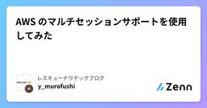

レスキューナウテックブログのフィード
https://zenn.dev/p/rescuenow
日本で唯一の危機管理情報を専門に取り扱う防災・BCPの専門企業、(株)レスキューナウです。当社で活躍するエンジニアの技術ブログを中心に公開していきます。
フィード

AWS のマルチセッションサポートを使用してみた
レスキューナウテックブログのフィード
はじめに最近、AWS コンソールに「マルチセッションサポート」という機能が追加されているのを見つけました。実際に試してみたので、その概要や設定方法、実際に使ってみた感想をまとめます。 AWS のマルチセッションサポートについてAWS のマルチセッションサポートでは、一つのブラウザで複数の AWS アカウントを同時に操作できる点が大きな特徴です。これにより、異なるアカウントでの操作を切り替える手間が大幅に削減され、複数の環境を効率的に管理することが可能になります。具体的には、複数の AWS アカウントに同時にログインし、それぞれのコンソールを一つのブラウザで開いて操作で...
3日前

JavaのHikariCPでConnectionの状態を確認する方法
レスキューナウテックブログのフィード
はじめにHikariCP の Connection Pool を使用してDBアクセスをする際に、取得した Connection が有効かどうかを確認する方法について調査しました。 HikariCPのデフォルト動作HikariCP は特別な設定をしなくても、コネクションの有効性を自動でチェックする仕組みがあります。HikariCP では、以下のタイミングで Connection の有効性チェックが行われます。Connection をプールから取得するときdataSource.getConnection() を呼び出す際、HikariCP は無効な Connection ...
8日前
Amazon Aurora × Terraform で注意したい仕様
レスキューナウテックブログのフィード
はじめに初めて Terraform でマルチ AZ 対応の Aurora を構築しようとしたり、グローバルデータベースを利用する際、いくつかの制約に直面することがあるかと思います。今回は私が Aurora を構築する際に遭遇した、悩ましい仕様についてご紹介したいと思います。最初に知っておくと実装が少しスムーズになるかもしれません。参考になれば幸いです。※なお、本記事の内容は 2025年3月3日現在の情報に基づいています。今後、内容が古くなる場合がありますのでご了承ください。 Terraform で Aurora インスタンスを記述する際にライター / リーダーの指定ができ...
10日前
サーバーレスNEGの外れ値検出機能の検証
レスキューナウテックブログのフィード
はじめにマルチリージョンに展開したCloud Runサービスの可用性向上を目指す際、片方のリージョンで障害が発生した場合に自動的に他リージョンへトラフィックを切り替える仕組みが求められます。グローバル外部アプリケーションロードバランサを用いてCloud Runをバックエンドとする場合、従来のヘルスチェック機能は利用できません。そこで、外れ値検出機能を活用し、不健全なCloud Runインスタンスへのトラフィック流入を軽減する方法を検証してみました。 方法アプリケーションのコンテナイメージ作成健全なアプリケーション：HTTPステータスコード200を返却不健全なアプリケ...
16日前
Flutter のビルドで Error (Xcode): unsupported option '-G' for target 'x86
レスキューナウテックブログのフィード
はじめに今年に入ってから Flutter の勉強をしているのですが、サンプルプログラムを作っている際に遭遇したエラーについて記録しておきます。Flutter 環境構築は以下の書籍を参考に設定しています。Flutter実践開発 ── iPhone／Android両対応アプリ開発のテクニックhttps://www.amazon.co.jp/Flutter実践開発-──-iPhone／Android両対応アプリ開発のテクニック-渡部-陽太/dp/4297139936また今回作成していたサンプルプログラムは Udemy の「Flutterアプリ開発講座(初級編)」の Chapter...
18日前
Auroraクラスターを7日間以上停止する一番簡単な方法
レスキューナウテックブログのフィード
はじめにAWSのDBは、メンテナンスやパッチ適用を定期的に実施するためなど様々な理由から、7日間以上停止することができないようになっています。7日経過すると自動的に起動します。そのためしばらく使わないとわかっているDBがある場合、インスタンス時間にかかるコストだけでも削減しようとするなら、7日ごとに起動してくるDBを忘れずに停止する必要があります。自動化するために色々なやり方があるのですが、AWSが公開しているやり方は2年前に更新されたナレッジで、一番簡単な方法ではないような気がしましたので、私なりのやり方を書いてみます。 色々なやり方私が今回紹介するのは以下の3つやり方...
1ヶ月前
Cloud Storage への書き込みをトリガーにして Filestore ファイル共有に特定のデータをコピーする
レスキューナウテックブログのフィード
はじめにこの記事では、Cloud Storage バケットへの書き込みをトリガーにして、Cloud Run で特定のデータを Filestore ファイル共有にコピーする方法について説明します。特定のデータとは、例えばファイル名が日付（yyyyMMdd）から始まるデータの2025年分だけをコピーしたい場合を考えます。 前提条件以下のものを知っている、または設定済であることを前提とします。Google Cloud Platform (GCP) アカウントCloudShellCloud Storage バケットFilestore ファイル共有Cloud RunCl...
1ヶ月前
DMARCレポートを読んでみる
レスキューナウテックブログのフィード
DMARC（Domain-based Message Authentication, Reporting & Conformance）の設定によりDMARCレポートが届くようになったのですが、何が書かれてあって何を確認するべきなのかが分からなかったので調べてみました。DMARCレポートには集約レポート（ruaレポート）と失敗レポート（rufレポート）の2種類あるようですが、今回調べたのは集約レポートの方です。 前提：DMARCの設定内容Google CloudのDNSには以下のように設定しています。"v=DMARC1;p=quarantine;rua=mailto:DM...
1ヶ月前
MinIOによるローカルS3環境の構築
レスキューナウテックブログのフィード
はじめにS3互換ストレージであるMinIOを使用して、ローカル環境でS3の開発環境を構築する方法を解説します。S3（MinIO）への接続はAWS SDK for Go V2を使用します。MinIO SDKは使用しません。 MinIOとはMinIOは、オープンソースのS3互換オブジェクトストレージサーバーです。AWS S3と互換性のあるAPIを提供しており、開発環境やテスト環境での利用に適しています。利点として以下があります：AWS S3と同じAPIインターフェースを使用可能ローカル環境で完結するため、費用がかからないDockerで簡単に環境構築が可能本番環境と...
1ヶ月前
ValueObject について、複数の書籍を参考にして学習しました
レスキューナウテックブログのフィード
はじめにプログラムの設計を考える上で、「値」と「オブジェクト」の違いを意識することは重要です。特に、値としての意味を持ちつつ、不変であることが求められる概念をどのように扱うべきかは、多くの開発者が直面する課題となります。Value Object（値オブジェクト）は、ドメイン駆動設計（DDD）において重要な概念の一つです。値としての意味を持ちながらも、エンティティとは異なり識別子を持たず、等価性によって同一性を判断します。これにより、データの扱いをより安全にし、設計の意図を明確にすることができます。今回、「良いコード／悪いコードで学ぶ設計入門」「テスト駆動開発」「ドメイン駆...
1ヶ月前
GitHub Actions で Parameter Store からデータを取得して EC2 の .env に設定する方法
レスキューナウテックブログのフィード
はじめに今回は業務で必要になった小ネタを紹介します。GitHub Actions を活用して、AWS Systems Manager Parameter Store からデータを取得し、EC2 インスタンス上の.envファイルに値を設定してみます。.env ファイルはサーバ上のスクリプトから利用される感じです。 前提条件AWSアカウント：適切な権限を持つAWSアカウントが必要です。GitHubリポジトリ：コードが配置されているリポジトリ。EC2インスタンス：ターゲットとなるEC2インスタンスが稼働していること。 手順 1. Parameter Sto...
1ヶ月前
Vue3 で JAXA Earth API をお試し
レスキューナウテックブログのフィード
tokadev です。前回の記事の最後に書いたAPIを感触を知るために触ってみました。https://zenn.dev/rescuenow/articles/5ec1c9a9acd60f世界の雨分布速報のほかにもJAXAが配信する衛星データの配信サービスがあります。https://data.earth.jaxa.jp/ja/datasets/こちらを利用することで衛星データを描画して簡単に可視化することが出来ます。今回試したのは Land Surface Temperature のデータセットです。地表面温度のデータを取得して Vue3 で描画してみます。 Vue3 プロ...
2ヶ月前
GitHub Codespaces 使ってみた
レスキューナウテックブログのフィード
最近「AWS Serverless Patterns Workshop Using LocalStack」を試していて、簡単に環境をセットアップして作業を開始できる GitHub Codespaces が今更ながら便利だと思ったので試しに使ってみました。https://zenn.dev/kakakakakku/books/aws-serverless-pattern-workshop-using-localstack GitHub Codespaces とはcodespace は、クラウドでホストされている開発環境です。構成ファイルをリポジトリにコミットすることで、GitHu...
2ヶ月前
AWS CLIを使用してログストリームを取得する
レスキューナウテックブログのフィード
初めにAWS API CloudWatchのログストリームをAWS CLIで参照する方法を調べましたのでまとめました。 コマンド 基本実行aws logs filter-log-events --profile {プロファイル} --log-group-name "{ロググループ名}" --log-stream-names "{ログストリーム名}"実行結果{ "events": [ { "logStreamName": "logStreamName", "timestamp": 17375972...
2ヶ月前
Mermaidで利用頻度が高そうな構文まとめ
レスキューナウテックブログのフィード
はじめにMermaidはテキストを図表に変換できるツールです。GithubやNotion、Zennにも対応しており、テキストの修正に動的に対応して図表に反映してくれます。今回は業務で使用させていただく機会がありましたので、Mermaidで設計時によく利用しそうな機能に絞ってまとめてみました！https://mermaid.js.org/対応する図表連携しているシステム 準備Mermaidはライブエディタを通じて手軽に試すことができます。また、VisualStudioCodeでは下記の拡張機能をインストールすることで利用可能です。https://marketp...
2ヶ月前
AWS Certified SysOps Administrator - Associate 受験記
レスキューナウテックブログのフィード
経緯昨年 2024年5月に AWS Certified Solutions Architect - Associate を取得してから半年が経過し、その間に 度々 AWS に触れるようになったことと、チーム内で主にインフラを担当する機会が増えてきたことで、運用に関する AWS 資格を取りたいと思うようになりました。そこで今回、2024年11月に AWS Certified SysOps Administrator - Associate を受験したので取り組んだことを記録したいと思います。 取り組んだこと勉強期間: 11/01 〜 11/29 の 1ヶ月間1日あたり勉強時...
2ヶ月前
Fletで世界の地震情報を表示してみた
レスキューナウテックブログのフィード
はじめにFletでマップを表示できることを知り、地震情報の描画を試してみました。Fletは、FlutterをベースにしたPythonフレームワークで、Web、デスクトップ、モバイルアプリケーションに対応しています。個人的には、ロゴがポップな感じで好きです。 動作環境WSL2 Ubuntu (Windows 11)Python 3.12.3uv 0.5.18flet 0.25.2 環境構築uvを使用して、仮想環境でFletを使えるようにしました[1]。# プロジェクトの作成uv init flet-mapcd flet-map# ライブラリの追加uv...
2ヶ月前
AWS Step Functions で実現する並列処理パターン: パラレル・Map ステートの組み合わせによる大規模データ処理
レスキューナウテックブログのフィード
はじめに本記事は AWS Step Functions を使用した並列処理パターンについて、パラレルステートと Mapステートを組み合わせた処理フローの解説をします。 実装するユースケース今回実装するのは以下のようなデータ処理フローです。パラレルステートで処理を2つに分岐：一方はリストデータの並列処理を担当。もう一方は、S3から取得したCSVファイルを処理。各分岐で Map ステートを使用し、データを並列処理。最後にすべての処理結果を集約。 Step Functions ステートマシンの設計 全体のアーキテクチャイメージ定義{ "Co...
2ヶ月前
ドメイン駆動設計をはじめようを読んでみた
レスキューナウテックブログのフィード
はじめに先日モノタロウさんのイベントに参加してとても素晴らしい内容だったのでパネルディスカッションに参加していた増田さんが翻訳した「ドメイン駆動設計をはじめよう」を読んでみました📚https://monotaro.connpass.com/event/331775/https://www.oreilly.co.jp/books/9784814400737/ 目次 第Ⅰ部 設計の基本方針1章 事業活動を分析する1.1 事業領域（ビジネスドメイン）とは何か1.2 業務領域（サブドメイン）とは何か1.3 事業分析の具体例1.4 業務エキスパート1.5 まとめ1...
3ヶ月前
2024年に学んだ技術の振り返り
レスキューナウテックブログのフィード
はじめに2024年も終わりに近づいてまいりました。2025年も継続して学んでいけるよう、前回同様に2024年学んだ技術について振り返りたいと思います。 クラウド関連2024年は業務で Google Cloud がメインとなり、AWS や Azure に触れる機会がほとんど無くなりました。そのため、Google Cloud 中心に勉強をしていました。 AzureAZ-204: Developing Solutions for Microsoft Azure と DP-100: Azure Data Scientist Associate の更新を行いました。Azure...
3ヶ月前